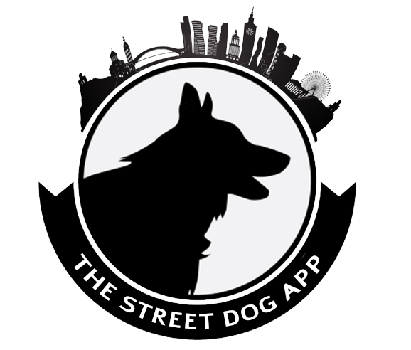
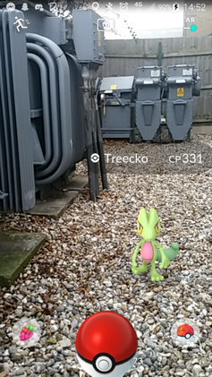
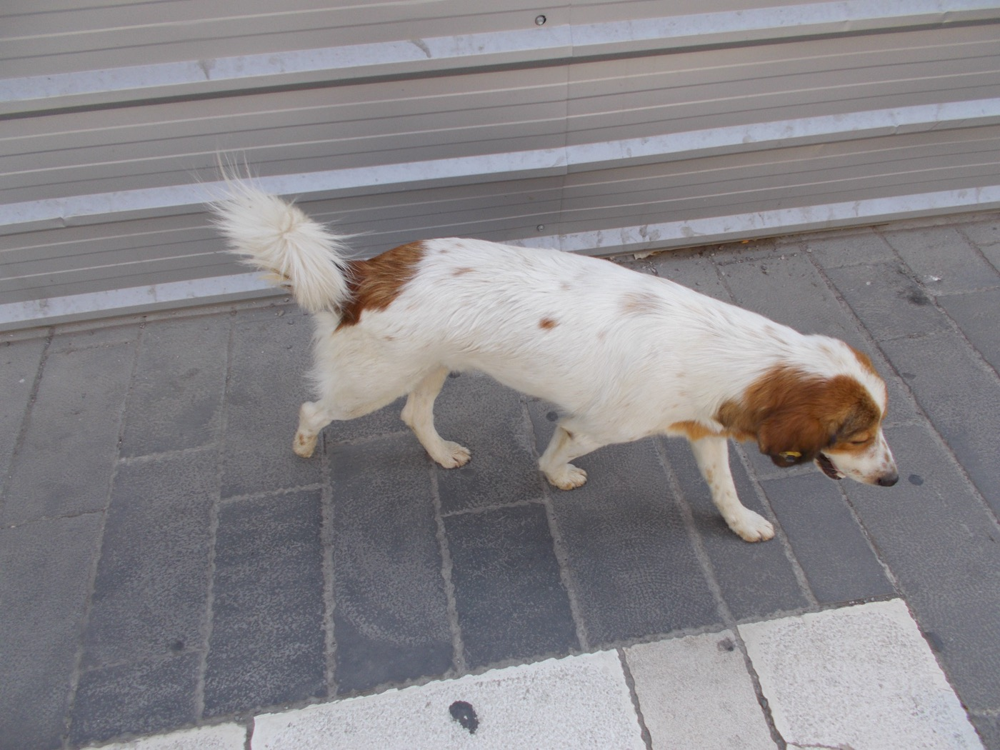
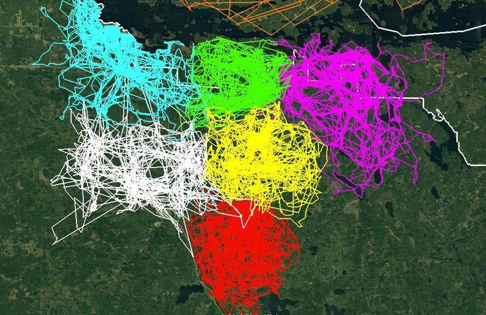

The Street Dog App
I came to Tbilisi
in 2012.
The street dogs were unlike anywhere else I'd lived. Not strays in the margins — characters in the life of the city.
They had
shepherd in them.
Interactive, intelligent, social. They greet you, walk a block with you, hold down a corner like it's a job.
Each one had a territory.
And a story.
The dog by the bakery. The one who escorts kids across the road. They are known, named, and local — a cast of regulars the whole neighbourhood recognises.
By different accounts — a whole population living in plain sight, and mostly unmeasured.
Then the world
started collecting.
Location games — Pokémon GO and its kin — turned whole cities into a board. Go outside. Find them. Catch them. Log them. Millions were hooked.

Street dogs already
wear an ID.
Tagged through the city's vaccinate-and-neuter program, each ear carries a unique number. The "creatures" are real — and already identifiable.

So we built the
first version.
It worked. People could log a dog. But the interface was limited — the idea kept outrunning the tool.
Then years of
re-inventing.
Rebuilt. Rethought. Thrown away. Started again. The kind of stubbornness a good idea demands.
Finally — the app
as we always saw it.
Fast. Gameful. Real. Built around the dogs, the tags, and the people who notice them.
So what is
this app?
Data tells the story.
Every sighting is a data point — which dog, where, when, what condition. One on its own is a note. Thousands together become a living portrait of the city's animal life.
Data & knowledge
enable action.
Knowing a dog — its tag, its corner, its history — turns sympathy into something you can actually do.
Faster help
Report an injured or sick dog and route it to partner clinics, with location and history attached.
Better adoption
A named dog with a face, a temperament, and a track record is far easier to rehome than an anonymous stray.
Track the population
Tagged sightings over time show how many dogs there are, where, and whether numbers are rising or falling.
…and welfare monitoring, hotspot response, and hard evidence for city policy.
Gamification.
The same loop that hooked millions — pointed at something that actually matters.
Missions.
XP — that
could become good.
Every contribution earns experience and rank. The plan: let XP convert into donations — turning play into food, vaccines, and care for the dogs being mapped.
Results: a city
that maps itself.
Crowd-sourced sightings become a living territory map — like the range maps drawn for wolf packs, but charted by a whole city.

Spot the districts that need attention — density, health flags, neglect.
Raise adoption rates by giving every dog a profile and a story.
Measure population trends — and catch disease or lost dogs early.
Built as a demo.
Open for collaboration.
We made this through one lens — a technical one. The data and the platform are open to anyone who sees it through another: vets, shelters, the city, researchers, designers, funders.
Bring your lens. Let's point it at the same map.